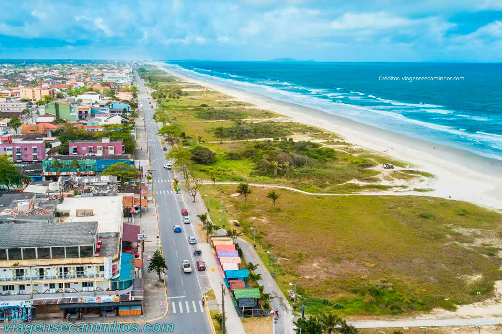
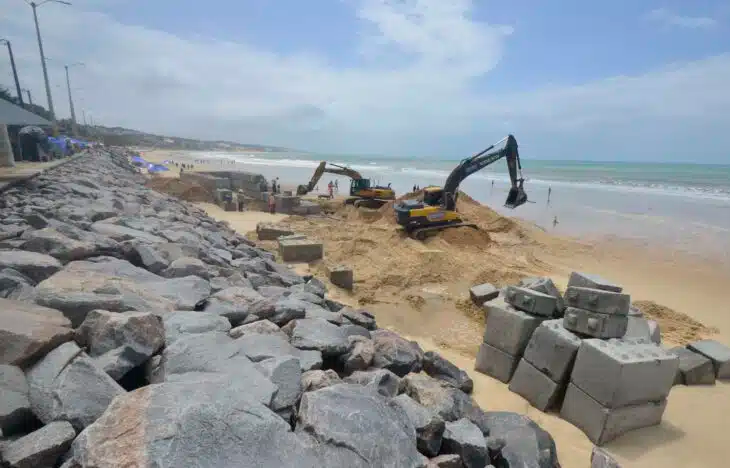
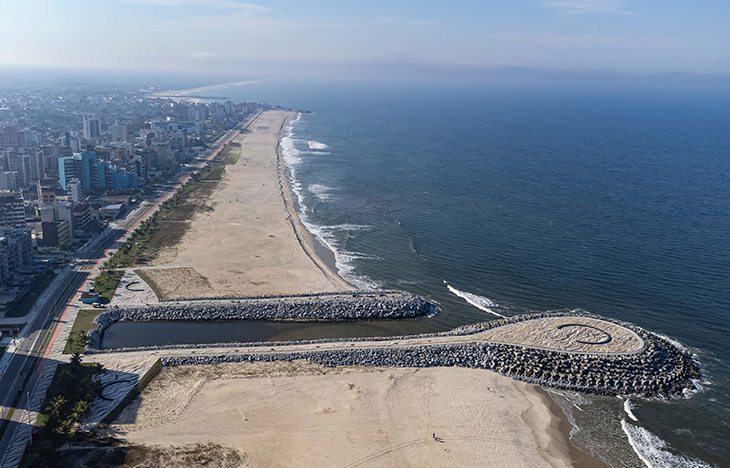
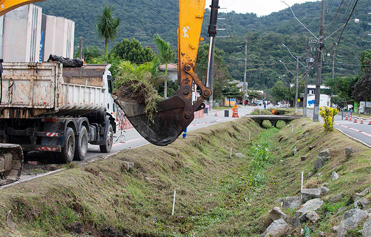
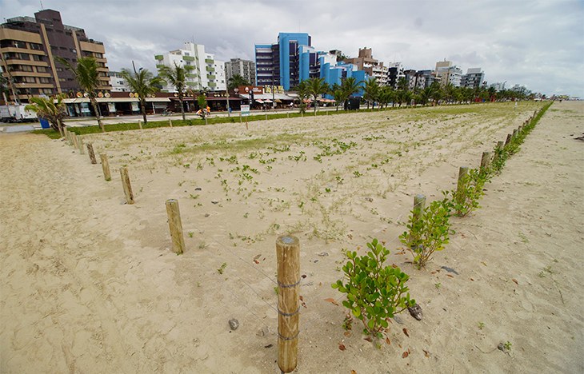
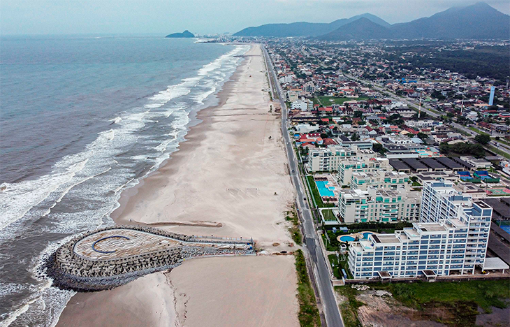
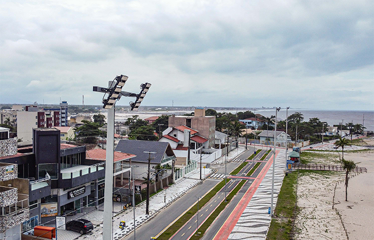

2022 - Engorda Costeira

2022 - Revitalização da Orla

2022 - Macrodrenagem

2023 - Plantio de Vegetação
2023 - Revitalização da Orla
2023 - Macrodrenagem

2023 - Microdrenagem
2024 - Macrodrenagem
2024 - Microdrenagem

2024 - Implantação dos Superpostes